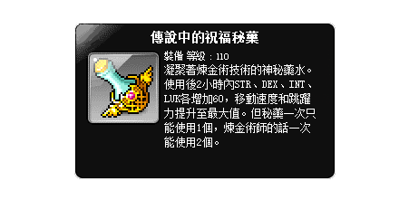

建立角色機體資料
目前選擇的是: {{FinJobIs[0].key}}
step1
step2
step3
step4
 1.等級
1.等級

職業類型:
{{fiveJobIs[0].key}}
- {{list.key}}
- {{list.key}}
準備秘藥 (擇一即可)
請先備妥，否則無法順利建立資料!!
- 傳說2
- 傳說3
請選擇!

準備好後點選 next
調整戰地角色卡
str:{{BattleStatsStr}}
dex:{{BattleStatsDex}}
dex:{{BattleStatsDex}}
str:{{BattleStatsStr}}
int:{{BattleStatsInt}}
luk:{{BattleStatsLuk}}
luk:{{BattleStatsLuk}}
dex:{{BattleStatsDex}}
luk:{{BattleStatsLuk}}
dex:{{BattleStatsDex}}
str:{{BattleStatsStr}}
str:{{BattleStatsStr}}
dex:{{BattleStatsDex}}
luk:{{BattleStatsLuk}}
恢復預設值
(預設值:戰地等級皆SS)
- 戰地等級 職業 增加屬性
- {{list.lv}} {{list.key}} + {{list.val}} {{list.stats}}
- 戰地等級 職業 增加屬性
- {{list.lv}} {{list.key}} + {{list.val}} {{list.stats}}
- {{ZenonBattleStats[0].lv}} 傑諾 +{{ZenonBattleStats[0].val}}str、dex、luk
輸入以下資訊
建議技能僅使用戰鬥命令、楓葉祝福以便之後模擬計算
1.等級
2.物理/魔法攻擊力
3.%攻擊力
4.總傷害%數
5.Boss傷害%數
5.一般怪物傷害%數
6.無視防禦%數
7.最終傷害%數(被動)
8.爆擊傷害%數
9.Arc符文
10.Aut符文
11.能力主/副屬性
12.吃秘藥後主/副屬性
13.極限主/副屬性
14.內潛主/副屬性
飾品set數
防具set數
飾品set數
防具set數
輸入提示區
資料已建立完成，可至前往模擬器點選載入資料or返回重建資料